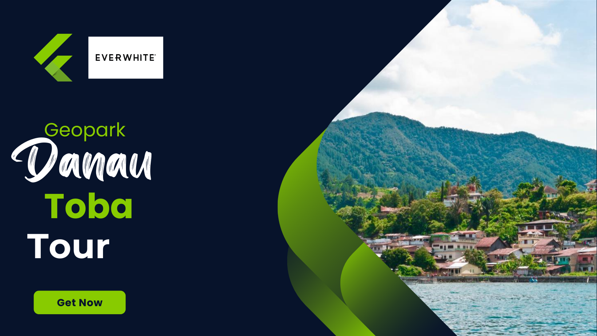

Kec. Girsang Sipangan Bolon Kabupaten Simalungun Sumatera Utara.
Legenda yang melekat pada Batu Gantung ini juga memiliki kaitan dengan asal mula nama Kota Parapat, lho. Asal mula penamaan ini masih ada kaitannya dengan kisah kematian Seruni. Menurut legenda, sebelum Seruni meninggal terhimpi batu, Ia sempat berteriak "Parapat... parapat batu!" dalam bahasa Batak yang berarti merapatlah batu. Si Tuki yang tahu Seruni dalam bahaya kemudian berlari ke desa. Ia menggonggong dan mengais tanah untuk memberitahu warga. Akhirnya warga yang mengerti mengikuti Si Tuki menuju tebing. Namun pada saat itu warga sudah tererlambat karena Seruni sudah berada di penghujung nyawa. Saat itu, warga hanya mendengar kata terakhir yang ia teriakan, yaitu "Parapat".
Legenda yang melekat pada Batu Gantung ini juga memiliki kaitan dengan asal mula nama Kota Parapat, lho. Asal mula penamaan ini masih ada kaitannya dengan kisah kematian Seruni.
Menurut legenda, sebelum Seruni meninggal terhimpit batu, Ia sempat berteriak "Parapat... parapat batu!" dalam bahasa Batak yang berarti merapatlah batu. Si Tuki yang tahu Seruni dalam bahaya kemudian berlari ke desa. Ia menggonggong dan mengais tanah untuk memberitahu warga. Akhirnya warga yang mengerti mengikuti Si Tuki menuju tebing.
Namun pada saat itu warga sudah tererlambat karena Seruni sudah berada di penghujung nyawa. Saat itu, warga hanya mendengar kata terakhir yang ia teriakan, yaitu "Parapat".
Di sekitaran Parapat ditemukan juga beberapa kawasan wisata alam yang tentunya akan sangat menarik untuk di eksplore lebih dalam lagi.
Sebenarnya Gibeon sendiri merupakan tempat sekolahan bagi kaum Kristiani. Namun, karena memiliki suguhan alam yang istimewa, tempat ini menjadi daya tarik yang luar biasa bagi wisatawan. Banyak kalangan umum yang mendatangi kawasan ini untuk menikmati pesona keindahan air terjun sekaligus menikmati segarnya air di sana, baik itu dengan cara mandi di kolam renang maupun langsung berbasah-basahan di bawah guyuran air terjun.
Sejak 28 Desember 2017, untuk menuju Danau Toba bisa dicapai dengan menggunakan kapal pesiar alias cruise. Paket kapal pesiar ke Danau Toba ini menjadi paket baru yang digarap bersama pemerintah Singapura. Kapal pesiar milik Pemerintah Kabupaten Samosir ini bentuknya seperti rumah adat Batak, lengkap dengan ornamen ukirnya yang berukuran panjang 21,5 meter dan lebar 7 meter. Uniknya, strukturnya hampir seluruhnya terbuat dari bahan kayu! .
Air Terjun Situmurun ini juga sering disebut sebagai Air Terjun Binangalom karena airnya berasal dari desa Binangalom Kecamatan Lumban Julu, kabupaten Toba Samosir, Sumatera Utara. Kata Binangalom berasal dari nama sebuah sungai, yaitu Lum. Lum atau Lom dalam bahasa Batak Toba dapat diartikan sebagai air penyejuk hati. Dari sekian banyak air terjun yang ada di Indonesia air terjun ini tergolong unik karena airnya mengalir langsung jatuh ke Danau Toba. Anda pun dapat menikmati sensasi berenang melawan arus di air terjun ini. .
Tidak hanya disekitaran Parapat saja, Tetapi ada juga di Tempat wisata di Kawasan Danau Toba yang tentunya sangat memanjakan mata .
Bukit Holbung adalah salah satu bukit yang ada di daerah Samosir dengan view yang sangat memanjakan mata sehingga bukit ini tentunya akan sangat memberikan banyak perhatian kepada touris lokal maupun dari diluar dari samosir.
Tinggi Pusuk Buhit mencapai 1.077 meter dari permukaan danau. Suasanya sejuk, karena berada di ketinggian. Cobalah berkemah di sini, karena pesona alam saat malam hari terasa lebih syahdu. Taburan bintang yang indah menjadi lampu alami sepanjang malam.
Wisata Paropo di Danau Toba, salah satu wisata favorit di Sumatra Utara. Berkemah dan menikmati langsung air danau bakal jadi kegiatan yang menyenangkan di sini.Jadi disini sangat banyak pengunjung yang ingin mersakan hidup di alam bebas
Air Terjun Efrata memiliki keunikan tersendiri yaitu air terjun yang melebar dan sangat alami. Air Terjun Efrata menawarkan kesejukan dan udara segar, cocok buat kamu untuk sejenak pergi dari kepenatan rutinitas pekerjaan maupun pembelajaran bagi para Mahasiswa
Danau alami ini terbentuk akibat letusan gunung berapi super sekitar 77.000 tahun lalu. Memiliki luas lebih dari 1.145 kilometer persegi, dan kedalamannya 508 meter.
Itulah mengapa, Danau Toba sebenarnya lebih mirip lautan. Terlebih, menjadi danau terbesar di Asia Tenggara dan salah satu danau terdalam di dunia.
Danau Toba terbentuk dari tiga letusan besar Gunung Toba. Letusan pertama menghasilkan kaldera di sisi selatan, letusan kedua membentuk kaldera di sisi utara, letusan ketiga yang terbesar mengubah Gunung Toba menjadi Danau Toba. Yang kerennya lagi, UNESCO sendiri telah menetapkan kaldera Toba sebagai Global Geopark atau menjadi warisan dunia.
Danau Toba berukuran begitu besar dengan sebuah pulau di tengahnya, bernama Pulau Samosir. Ukuran Pulau Samosir seluas 630 km², yakni hampir seukuran dengan Singapura yang seluas 728 km². Pulau Samosir sendiri memiliki dua danau yaitu Danau Sidihoni dan Danau Aek Natonang.
Everwhite is a programming language-themed website that can be learned for free and is easily accessible to all of you
My Social Media